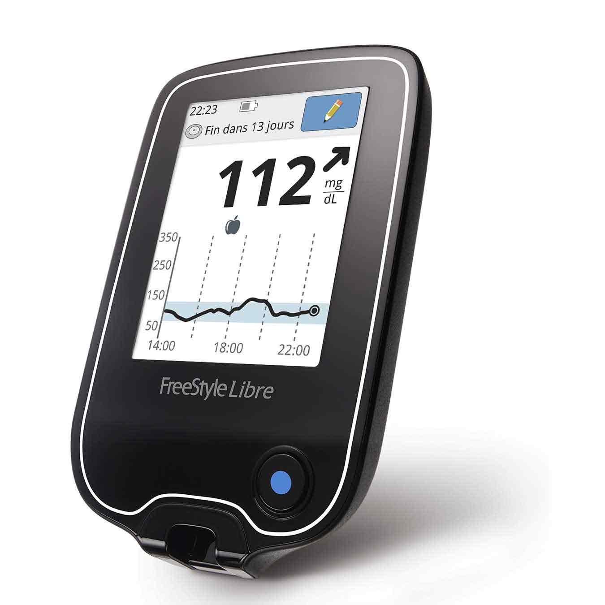

Le médical
La santé connectée consiste en l’utilisation des nouvelles technologies pour améliorer la santé des citoyens. Ces technologies peuvent faciliter l’accès aux soins et permettent à leurs utilisateurs une prise en charge personnalisée en matière de prévention ou de soins médicaux.
| Le médical | ||||
|---|---|---|---|---|
| Suivi Physique | Suivi Maladie | Accessoire | ||
| Montre | *** | Fauteuil roulant | ||
| Autres | *** | Protèse | ||
| Le médical | ||||
|---|---|---|---|---|
| Suivi Physique | ||||
| Montre | ||||
| Autres | ||||
| Suivi Maladie | ||||
| Accessoire | ||||
| Fauteuil roulant | ||||
| Protèse |
Suivi Physique
Plusieurs types d'objets connectés servent à vérifier notre conditions physiques et nous aider à rester en bonne santé. Ces objets prennent généralement la forme de montres mais pas seulement.
Montre
Les montres connectées, aussi appelées Smartwatch, sont capables d'afficher l'heure et de chronométrer comme les montres basiques, mais aussi de mesurer l'activité physique et parfois même d'utiliser des applications mobiles.
Parmi les fonctionnalités sanitaires proposées par certaines montres connectées figure l’ECG, à savoir l’électrocardiogramme, qui permet de mesurer l’activité électrique du cœur. L’intérêt de ces montres connectées est alors de
prévenir d’éventuels trouble relatifs à l’activité cardiaque. La smartwatch avertit en effet son utilisateur via une notification. Ce cas de figure a été constaté à plusieurs reprises à travers le monde, preuve que cette fonction a sa pertinence.
Elles peuvent mesurer le rythme cardiaque, la quantité d'oxygène dans le sang, compter le nombre de pas, calculer les calories perdues, détecter la durée de sommeil et d'activités physiques.
Ces montres peuvent aussi afficher les notifications du smartphone auquel elles sont connectés, SMS, Appel, applications de santé et autres.
Autres
Si vous voulez un suivi plus précis, il existe un tas d'objets connectés pour vous aider à rester en forme.
On peut d'abord penser à la balance connectée. Elle ne vous affiche pas seulement le poids mais également la masse graisseuse, musculaire, hydrique et osseuse. Elle propose aussi un bilan de santé cardio-vasculaire, le rythme cardiaque mais aussi la vitesse d'onde de votre pouls qui est un très bon indicateur de la santé cardiovasculaire. Il s’agit de la compilation des principaux facteurs de risques sanitaires (pression artérielle, cholestérol, etc.) : Lors d'un battement, l'onde se propage dans les artères. Si elle est trop rapide, cela veut dire qu’elles sont trop rigides et que vous risquez de développer une hypertension ou une autre maladie cardio-vasculaire.
Il existe des miroirs qui fait un balayage 3D du corps, une veste qui cherche à vous faire maigrir par le froid, un collier qui surveille ce que vous manger, des chaussures, etc.
Le sommeil est aussi une part importante de notre santé. Il existe des coussins et des masques pour aider à s'endormir, des patchs sur le front et des bagues qui analysent le sommeil.
Pour aller plus loin, il est possible de se faire tatouer un trackeur sous cutané. Ce tatouage change de couleur quand la santé se dégrade. Il y a aussi un tatouage temporaire qui change de couleur en fonction de l'exposition aux UVs et indique quand il faut aller à l'ombre.
Suivi Maladie

La technologie connectée permet de grandes avancé dans le monde médical. En effet, en plus de bénéficier des avancées scientifiques et techniques, ces objets envoient des informations au médecin et à la famille, ce qui permet un suivi beaucoup plus simple des patients. Ils existent toutes sortes d'objets connectés pour surveiller la santé. Par exemple, pour les personnes âgées, des verres connectés qui indiquent par un voyant lumineux si elles ne boivent pas assez, un pilulier connecté, une montre ou des pantoufles qui détectent les chutes, des airbags pour hanches, ... Pour les bébés, des couches connectées, poussettes, un babyphone qui enregistre une vidéo de 5 secondes s'il détecte un bruit, un autre qui détecte la qualité de l'air, un détecteur de mouvement qui se clipse au lange et même un vêtements qui mesure la température, la respiration, etc Pour les enfants, le robot Meyko qui surveille la prise de médicaments, des bracelets pour surveiller les enfants atteints d'autisme, des thermomètres etc. Des casques de réalités virtuelles sont parfois utilisés pour distraire les enfants pendants une piqure
Accessoire
Fauteuil roulant
Un objet connecté médical important est le fauteuil roulant car il utile pour beacoup de personnes handicapé. On peut penser notamment au fauteuil Stephen Hawkins. Dans certaines situations la médecine ne peut rien faire, c’est dans ce cadre là que la technologie devient une aide technique précieuse pour ces patients qui peuvent tout simplement continuer à vivre en continuant à se déplacer, parler, manger … Ces fauteuils peuvent reconnaître le trajets des utilisateurs, donner des informations sur l’accessibilité des lieux environnants, des informations sur le malade (température, battements du coeur) et prévenir les secours en cas de problème et aussi se déplacer de manière autonaumes. Certains peuvent être commandés par la pensé. Des collégiens de classes de 3èmes ont inventé un fauteuil pliables, léger et qui peut de commandé avec un smartphone.
Protèse
De grandes avancées ont été faites pour rendre les prothèses plus confortables et plus intelligentes. L’arrivée de l’imprimante 3D a également permis de créer d’incroyables modèles, se rapprochant toujours plus de la réalité. Des protèses de bras ressemblants à ceux de super-héros existent (par exemple, un bras Iron Man).
Les avancées ont permis de produire des protèses qui reproduisent les sentations. Ainsi, pour une protèse de jambe, le porteur peut sentir la différence entre l'herbe, le sable, le béton, la glace et même les petits caillous. La jambe artificielle des capteurs sous la plante du pied, reliés à d'autres cellules, appelées stimulateurs, qui sont au contact du moignon. C'est l'information transférée entre les capteurs et les stimulateurs qui permet de simuler, et finalement reproduire, la sensation du membre perdu. Ces protèses mettent aussi fin aux douleurs fantômes.
Il existe aussi des protèses de genous qui détecte si la protèse a été bien installé.